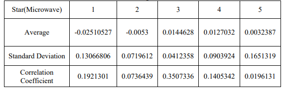

比赛官网: https://www.comap.com/
With the fast development of online marketplace, it is essential for companies to hear the comments from customers and respond timely. Sunshine Company plans to use ratings and reviews of other competing products to analyze sales strategy and design features. In the text mining, to begin with, we preprocess the given data in two stages - noise removal and normalization. Then we use the n-gram model to find most frequently-used words, 2- word and 3-word phrases in high-star reviews, low-star reviews and high-quality reviews respectively. In this way we can get the key features that customers care the most, and the quality descriptors closely related to rating levels. Thus, we come to these conclusions:
(1) For hair dryers, some features need to be considered such as retractable cords and light weight;
(2) For microwave ovens, additional features include stainless steel interior and an instruction & cooking guide.
(3) For pacifiers, they need to be easy to use, easy to find, easy to clean and easy to carry along with diaper bags.
(4) Some descriptors are linked to high-star reviews: wonderful, excellent, awesome, perfect, etc. , while some are linked to low-star reviews: garbage, horrible, junk, awful...
Time-based measures are needed to judge whether specific star ratings incite more reviews. If we calculate the relation between the increased frequency of k-star reviews and time, then we will see there are no obvious occasions when specific star rating attracts reviews.
To predict a potentially successful or failing product quantitatively, we introduce the dual linear regressive equation. Since the number of total reviews (TR) can be roughly assumed to be affected by 2 variables - the number of 5-star ratings (FS) and the total of helpful votes (HP), the relation is as follows:
Use TR as a symbol of success. Combine this method with text-based measures with the help of key features and quality descriptors, it can indicate a product’s future.
Keywords: Text Mining; Natural Language Processing; N-gram; Correlation Coefficient